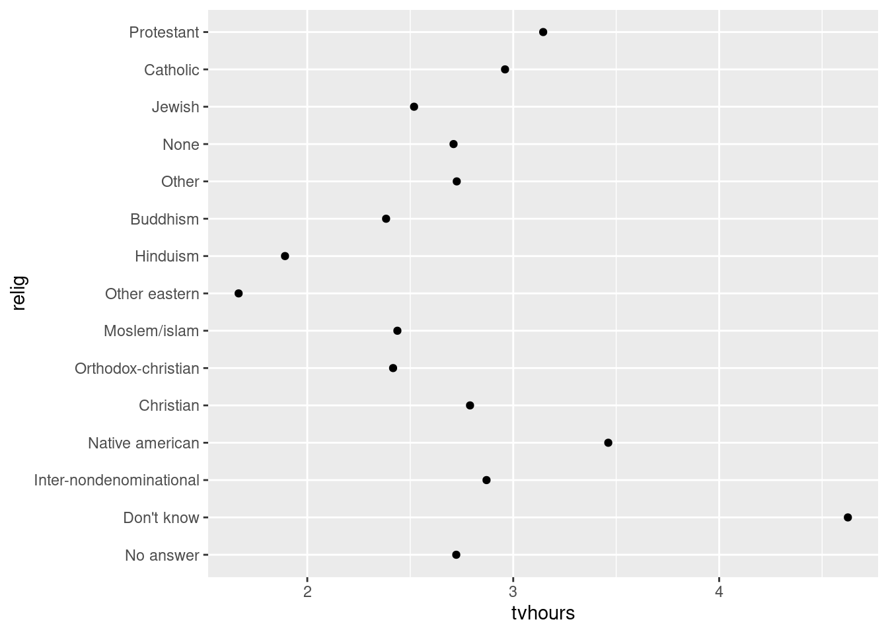
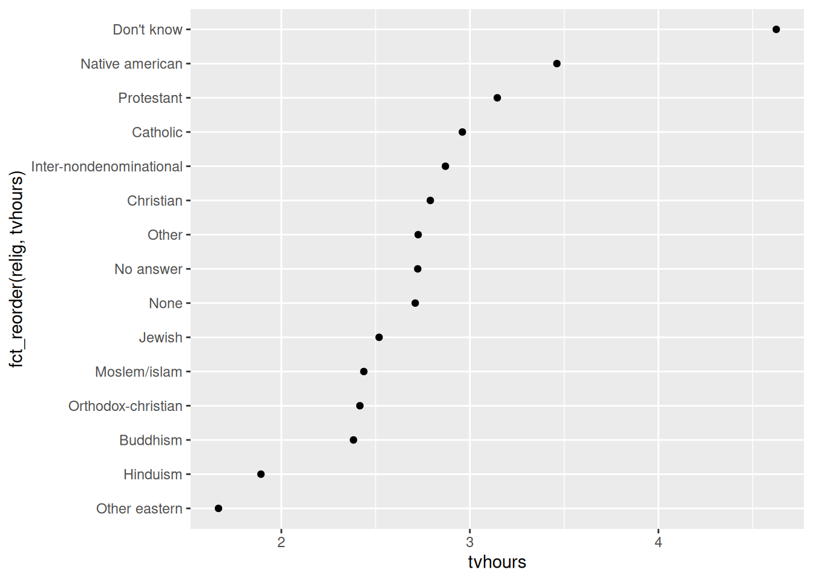
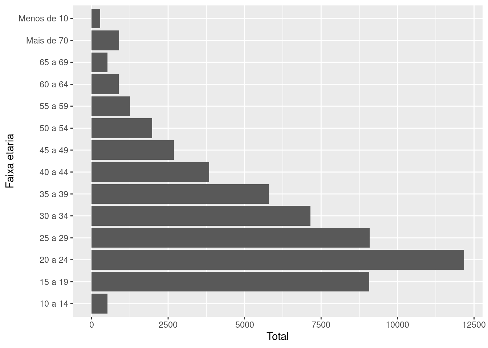
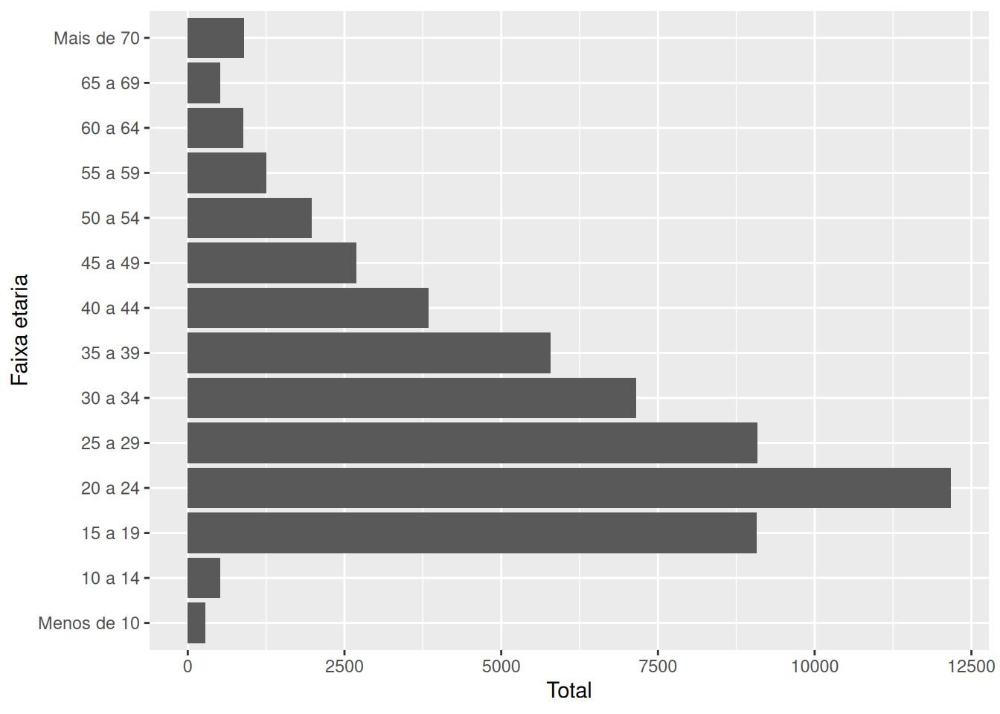
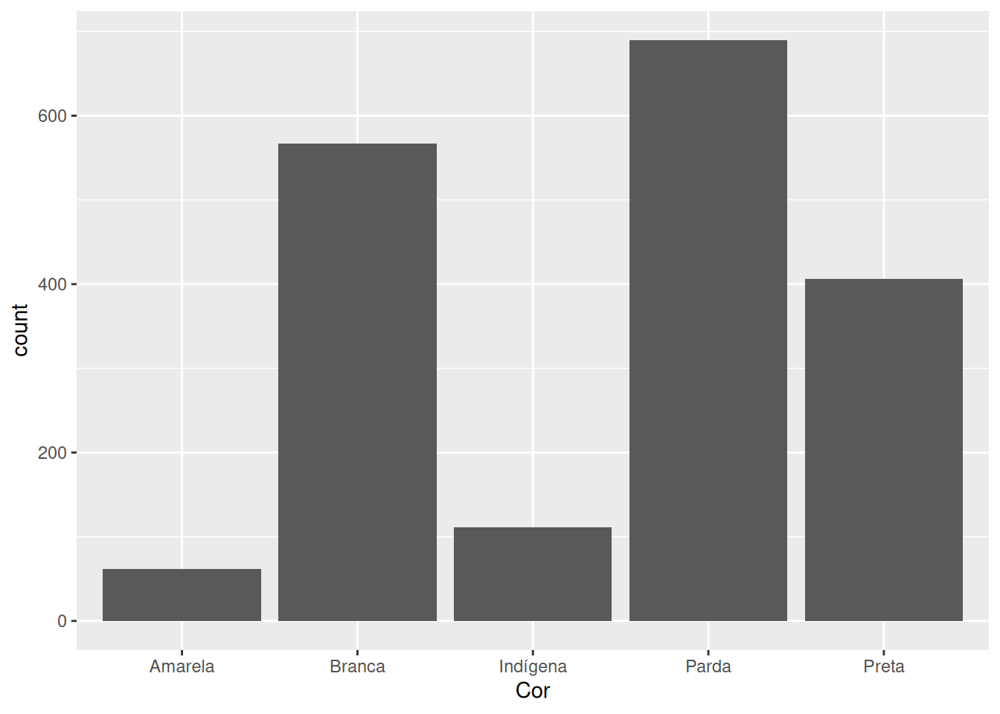
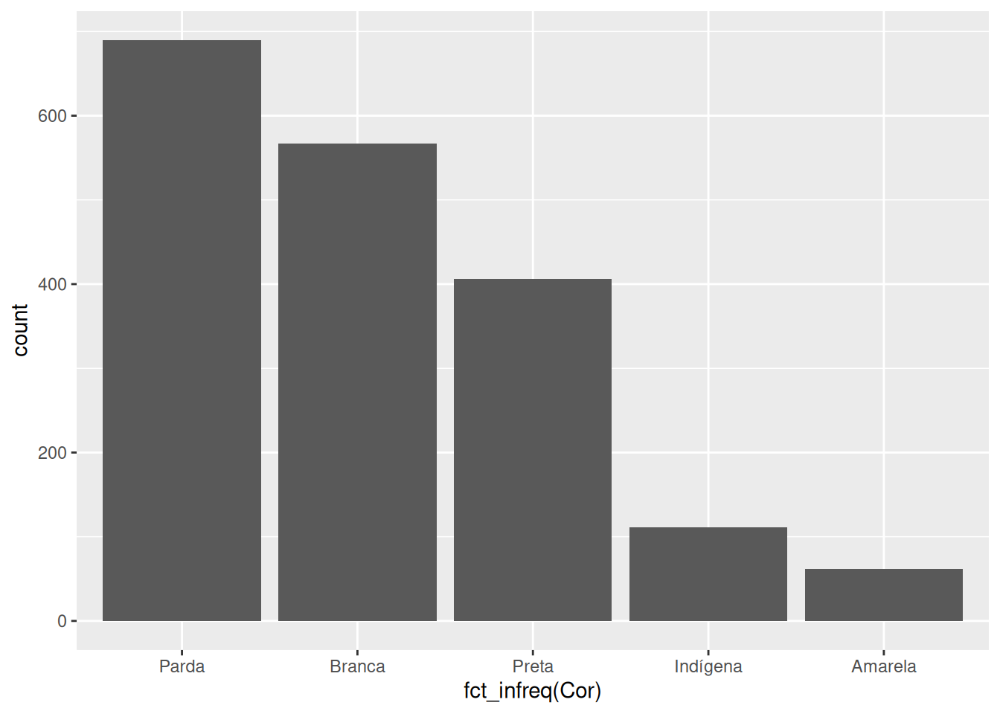

library(forcats)
## Ou
library(tidyverse)11 Introduzindo fatores (factor’s) com forcats
11.1 Introdução e pré-requisitos
No capítulo de Fundamentos da Linguagem R, introduzimos os 4 tipos básicos de dados disponíveis no R, sendo eles: integer; double; character; e logical. Entretanto, também destacamos que outros tipos de dados “mais complexos” estão presentes na linguagem R, e, que eles serão tão importantes quanto os tipos básicos em suas análises.
Os exemplos mais importantes desses tipos são os fatores (factor) e as variáveis de tempo, isto é, datas e horários (Date ou POSIXct). Neste capítulo, vamos focar a discussão no tipo factor, e, no próximo capítulo, discutiremos os tipos referentes às variáveis de tempo.
Parte dos exemplos deste capítulo, envolvem o uso de funções do pacote forcats, portanto, não se esqueça de instalar esse pacote (com o comando install.packages()), e, logo depois, chamar pelo pacote para a sua sessão (com o comando library()). O pacote forcats está incluso no pacote tidyverse, e, por isso, o tidyverse representa um caminho alternativo para você acessar as funções deste pacote.
11.2 O que são fatores ?
Um fator (ou factor) é um tipo de dado do R desenvolvido para o trabalho com variáveis categóricas, ou variáveis qualitativas. Ou seja, o tipo de dado factor lhe permite armazenar características e qualidades que um indivíduo carrega, ou de outra forma, qual a “categoria” ou grupo em que cada indivíduo de sua tabela se encaixa.
O sexo e a cor de pele são dois exemplos clássicos de variáveis qualitativas, pois elas identificam uma característica física do indivíduo. Características essas que determinam se o indivíduo pertence ou não a um grupo específico de pessoas (mulheres pardas, homens brancos, etc.). A faixa etária é um outro exemplo muito comum, sendo uma variável que busca separar indivíduos em vários grupos de acordo com as suas idades.
Entretanto, para além de características e categorias, também podemos identificar uma variável categórica, ao percebermos se essa variável pode (ou deve) assumir um conjunto muito específico e muito bem definido de valores (TEAM, 2020, pp. 8). Por exemplo, uma variável que apresente o sexo de uma pessoa pode assumir apenas dois valores diferentes (Homem ou Mulher; Masculino ou Feminino; H ou M; ou alguma outra variação desses valores). Pode haver ainda, a necessidade de incluir um terceiro valor para casos especiais, como “Indefinido”, mas em geral, o sexo assume apenas os dois valores supracitados1. Como um outro exemplo, uma variável que guarda o mês do ano ao qual os dados de sua tabela se referem pode assumir apenas doze valores diferentes (janeiro, fevereiro, março, …, novembro, dezembro), logo, essa também é uma variável categórica sob essa perspectiva.
11.3 Como construir um fator
Suponha que você tenha questionado o sexo de várias pessoas, e anotado as suas respostas no vetor abaixo (entrevista):
entrevista <- c("Mulher", "Homem", "Homem", "Mulher", "Mum")Se você deseja transformar esse vetor acima (que no momento é um vetor do tipo character) em um vetor do tipo factor, você deve primeiro pensar sobre o atributo levels que será utilizado neste vetor. Ou seja, todo objeto do tipo factor no R possui um atributo chamado levels, que representa o conjunto de valores que a variável em questão pode assumir. Como estamos anotando o sexo de algumas pessoas entrevistadas, sabemos que essa variável pode assumir apenas dois valores diferentes. Eu crio o vetor abaixo (niveis_sexo) com o objetivo de guardar essas informações.
niveis_sexo <- c("Homem", "Mulher")Agora que temos o vetor com a informação original (entrevista) e um vetor com os níveis, ou, os valores permitidos para essa variável (niveis_sexo), podemos criar o nosso fator através da função factor().
vec_fator <- factor(entrevista, levels = niveis_sexo)
vec_fator[1] Mulher Homem Homem Mulher <NA>
Levels: Homem MulherPerceba acima, que ao chamarmos pelo novo fator criado, os níveis da variável (atributo levels) são mostrados logo abaixo dos valores armazenados. Repare também, que todos os valores presentes no vetor original (entrevista) e que estejam fora dos níveis da variável (niveis_sexo) são silenciosamente convertidos para valores NA. Isto é, qualquer valor que esteja minimamente divergente dos valores presentes em levels, ou que contenha algum erro ortográfico, será convertido para um valor NA.
Você sempre pode acessar os níveis (isto é, o atributo levels) de um fator por meio da função levels(). Basta aplicá-la diretamente sobre o fator, que um vetor contendo esses níveis será retornado para você.
levels(vec_fator)[1] "Homem" "Mulher"Vale destacar, que para o R, um vetor do tipo factor, é na verdade, um vetor do tipo integer que carrega uma classe factor, e que possui um atributo chamado levels. Esse é um dos principais motivos pelos quais os tipos factor, Date e POSIXct são caracterizados como tipos “mais complexos” da linguagem R. Pois esses tipos são construídos a partir dos quatro tipos básicos, mas eles também acumulam novas características ou propriedades que não estão presentes nesses tipos básicos.
No caso do tipo factor, ele é construído a partir do tipo integer devido a forma como o R guarda os valores presentes em um vetor do tipo factor (TEAM, 2020, p. 8). Por exemplo, os valores “Homem” e “Mulher” do vetor vec_fator acima, são guardados pelo R como valores 1 e 2, e são posteriormente traduzidos como valores “Homem” e “Mulher” quando chamamos pelo vetor vec_fator. Tudo isso ocorre, devido às propriedades e atributos que um vetor do tipo factor carrega, e que o diferenciam de um vetor do tipo integer.
typeof(vec_fator)[1] "integer"class(vec_fator)[1] "factor"attributes(vec_fator)$levels
[1] "Homem" "Mulher"
$class
[1] "factor"11.4 Porque utilizar fatores se eu posso armazenar como texto ?
Você provavelmente está se perguntando qual a necessidade verdadeira dos fatores, levando em conta que você pode utilizar o tipo character para armazenar os dados de um variável qualitativa. (WICKHAM; GROLEMUND, 2017, pp. 224) nos concede um ótimo exemplo de como um fator pode fazer toda a diferença.
Por exemplo, suponha que você possua o vetor abaixo contendo alguns meses do ano. Em geral, há dois problemas no uso de um vetor do tipo character para guardar essas informações.
vec <- c("Mar", "Fev", "Jan", "Set", "Out", "Abr")Primeiro, você não está prevenido contra possíveis erros ortográficos. Isso pode ser um problema de pouca importância caso esses dados estejam sendo gerados por uma máquina ou programa, mas ele se torna um problema sério caso você esteja anotando esses valores na mão, ou esteja constantemente corrigindo-os de alguma maneira que seja suscetível ao erro. Logo, se algum mês for incorretamente gravado, nenhum erro ou medida cautelar será acionada pelo R para corrigir esse problema.
Segundo, quando essas informações estão sendo guardadas pelo tipo character, o sistema de ordenação utilizado pelo R (ordenação alfabética) é de pouca utilidade. Como você pode ver abaixo, o R acabou colocando o mês de abril antes dos meses de fevereiro e janeiro.
sort(vec)[1] "Abr" "Fev" "Jan" "Mar" "Out" "Set"O uso do tipo factor consegue resolver ambos desses problemas. Pois você já sabe que qualquer valor disposto em vec, que possua algum erro ortográfico em comparação com os meses dispostos no atributo levels do fator será automaticamente convertido para um valor NA. Além disso, ao ordenar um objeto do tipo factor, o R sempre vai utilizar como referência, a ordem na qual os valores estão apresentados no atributo levels.
Como o vetor vec guarda alguns meses do ano, o vetor meses abaixo, representa o atributo levels do fator a ser criado a partir de vec. Lembre-se que, a ordem na qual os meses estão dispostos no atributo levels, afeta diretamente a maneira como o R ordena o fator. Logo, a ordem em que você fornece os valores em meses, será a ordem utilizada pelo R ao ordenar os valores de vec_fator.
meses <- c("Jan", "Fev", "Mar", "Abr", "Mai", "Jun",
"Jul", "Ago", "Set", "Out", "Nov", "Dez")
vec_fator <- factor(vec, levels = meses)
vec_fator[1] Mar Fev Jan Set Out Abr
Levels: Jan Fev Mar Abr Mai Jun Jul Ago Set Out Nov Dezsort(vec_fator)[1] Jan Fev Mar Abr Set Out
Levels: Jan Fev Mar Abr Mai Jun Jul Ago Set Out Nov Dez11.5 Não construir o atributo levels é contraintuitivo
Apesar de ser o ideal, você não precisa obrigatoriamente construir o atributo levels ao formar um fator. Pois você tem a opção de delegar esse trabalho para a própria função factor(), ao aplicá-la diretamente sobre o seu vetor de interesse.
Porém, ao escolher esse caminho, factor() vai extrair todos os valores únicos de seu vetor, e posicioná-los em ordem alfabética no atributo levels. Ou seja, supondo que o seu vetor de interesse se chame x, é como se o atributo levels de seu fator, equivalesse ao resultado dos comandos: unique(x) %>% sort(); ou de outra forma: sort(unique(x)). Veja o exemplo abaixo:
v_letras <- c("e", "a", "b", "c", "a", "b", "d")
f <- factor(v_letras)
f[1] e a b c a b d
Levels: a b c d esort(f)[1] a a b b c d e
Levels: a b c d ePerceba acima, que tal comportamento de factor() torna o uso de fatores, algo inútil ou desnecessário. Pois a ordenação de seu fator será idêntica à ordenação alfabética utilizada sobre um vetor do tipo character. Lembre-se que para a ordenação de um fator, é utilizada a ordem na qual os valores são apresentados em levels(). Tal ponto pode ser inferido pelo exemplo abaixo, em que a ordenação produzida sobre os valores de v_letras é a mesma (em comparação com o resultado acima) quando ela se encontra no tipo character.
v_letras <- c("e", "a", "b", "c", "a", "b", "d")
typeof(v_letras)[1] "character"sort(v_letras)[1] "a" "a" "b" "b" "c" "d" "e"11.6 Alterando a ordem dos níveis de um fator
Portanto, o sistema de ordenação é um dos principais recursos do tipo factor no R, e tal sistema está diretamente conectado com o seu atributo levels. Por isso, uma das principais atividades com fatores está na reordenação e do atributo levels, ou em sua reatribuição.
11.6.1 A maneira mais simples e direta
A forma mais “simples” de alterarmos esse atributo é redefinindo-o por completo através da função levels(). Repare no exemplo abaixo, que apenas a letra “a” foi reposicionada no atributo.
levels(f) <- c("b", "c", "d", "e", "a")
sort(f)[1] b b c c d e a
Levels: b c d e aTal operação poderia ser realizada de diversas formas. Por exemplo, caso o seu fator possua um número muito grande de níveis, ao invés de reescrevê-los na mão, talvez seja mais rápido utilizar técnicas de subsetting para reordenar os níveis da maneira desejada.
## Criando um fator com muitos níveis
f <- c("a", "b", "c", "d", "e")
levels(f) <- c(
"a", "b", "c", "d", "e", "f", "g",
"h", "i", "j", "k", "l", "m", "n",
"o", "p", "q", "r", "s", "t", "u",
"v", "w", "x", "y", "z"
)
## Selecionando os níveis atuais
## e reordenando-os com subsetting
niveis_atuais <- levels(f)
n_niveis <- length(niveis_atuais)
novos_niveis <- niveis_atuais[c(4:2, 5:n_niveis, 1)]
## Redefinindo os níveis do fator
levels(f) <- novos_niveis
f[1] "a" "b" "c" "d" "e"
attr(,"levels")
[1] "d" "c" "b" "e" "f" "g" "h" "i" "j" "k" "l" "m" "n" "o" "p" "q" "r" "s" "t"
[20] "u" "v" "w" "x" "y" "z" "a"11.6.2 Maneiras alternativas que podem fazer a diferença
O pacote forcats oferece várias funções voltadas especificamente para o trabalho com fatores no R. Dentre essas funções, temos a fct_infreq(), que lhe permite reordenar o atributo levels de acordo com a frequência em que cada nível aparece no vetor (do nível mais frequente para o menos frequente).
v_letras <- c("e", "d", "d", "c", "a", "a", "a", "c",
"b", "d", "d", "e", "d", "a", "d", "c")
f <- factor(v_letras)
fct_infreq(f) [1] e d d c a a a c b d d e d a d c
Levels: d a c e bAlém disso, você também pode estar interessado em ordenar os níveis de um fator, de acordo com a ordem da primeira aparição de cada nível. Para isso, nós podemos utilizar a função fct_inorder(). Perceba pelo resultado do exemplo abaixo, que as letras “e”, “d” e “c” antecedem as letras “a” e “b” no atributo levels do fator gerado, pois essas letras aparecem primeiro no vetor original.
fct_inorder(f) [1] e d d c a a a c b d d e d a d c
Levels: e d c a bPara mais, haverá momentos em que você deseja ordenar os níveis de seu fator, de acordo com uma segunda variável. Essa situação ocorre principalmente quando o seu fator está incluso em um data.frame, junto de várias outras variáveis de seu interesse. Para tal ação, temos a função fct_reorder(), que lhe permite fornecer uma segunda variável na qual a ordenação do atributo levels será baseada.
Como exemplo, suponha que você possua a seguinte tabela contendo receitas mensais de algumas lojas:
unidades <- c("Savassi", "Centro", "Gameleira", "Pampulha")
set.seed(3)
tab <- tibble(
ano = 2021,
mes = rep(1:12, each = 4),
unidade = rep(unidades, times = 12),
receita = rnorm(48, 17000, 4800)
)
tab <- arrange(tab, mes, unidade)
tab# A tibble: 48 × 4
ano mes unidade receita
<dbl> <int> <chr> <dbl>
1 2021 1 Centro 15596.
2 2021 1 Gameleira 18242.
3 2021 1 Pampulha 11470.
4 2021 1 Savassi 12383.
5 2021 2 Centro 17145.
# ℹ 43 more rowsNo exemplo abaixo, ao transformarmos a variável unidade em um fator, os níveis da variável são organizados em ordem alfabética, como era esperado.
tab$unidade <- factor(tab$unidade)
tab$unidade [1] Centro Gameleira Pampulha Savassi Centro Gameleira Pampulha
[8] Savassi Centro Gameleira Pampulha Savassi Centro Gameleira
[15] Pampulha Savassi Centro Gameleira Pampulha Savassi Centro
[22] Gameleira Pampulha Savassi Centro Gameleira Pampulha Savassi
[29] Centro Gameleira Pampulha Savassi Centro Gameleira Pampulha
[36] Savassi Centro Gameleira Pampulha Savassi Centro Gameleira
[43] Pampulha Savassi Centro Gameleira Pampulha Savassi
Levels: Centro Gameleira Pampulha SavassiA função fct_reorder() vai sempre ordenar o seu fator de acordo com um sumário, ou alguma estatística descritiva da segunda variável. Por isso, você deve se perguntar qual estatística descritiva você deseja utilizar sobre a segunda variável em questão. Como exemplo, você talvez queira ordenar os níveis de unidade, de acordo com a receita média mensal de cada loja.
Logo, desejamos aplicar uma função de média sobre a variável receita ao longo de cada nível do fator unidade. Por isso, eu forneço a função mean() ao argumento .fun de fct_reorder(). Como podemos ver abaixo, as unidades do Centro e da Savassi possuem receitas médias menores do que unidades da Pampulha e da Gameleira, pois essas unidades se encontram nas primeiras posições do atributo levels do fator resultante de fct_reorder(). Ou seja, a função fct_reorder() utiliza, por padrão, uma ordem crescente no atributo levels. Caso você deseje inverter esse comportamento, basta configurar o argumento .desc da função para TRUE.
## Utilize: fct_reorder(unidade, receita, .fun = mean, .desc = TRUE)
## para utilizar uma ordenação crescente no atributo levels
tab <- tab %>%
mutate(
unidade = fct_reorder(unidade, receita, .fun = mean)
)
tab$unidade [1] Centro Gameleira Pampulha Savassi Centro Gameleira Pampulha
[8] Savassi Centro Gameleira Pampulha Savassi Centro Gameleira
[15] Pampulha Savassi Centro Gameleira Pampulha Savassi Centro
[22] Gameleira Pampulha Savassi Centro Gameleira Pampulha Savassi
[29] Centro Gameleira Pampulha Savassi Centro Gameleira Pampulha
[36] Savassi Centro Gameleira Pampulha Savassi Centro Gameleira
[43] Pampulha Savassi Centro Gameleira Pampulha Savassi
Levels: Centro Savassi Pampulha Gameleira11.7 Reordenando fatores em gráficos
A ordem na qual apresentamos certas informações pode mudar drasticamente não apenas as características físicas e visuais de seu gráfico, mas também, pode afetar e muito a clareza ou a ênfase em certas informações que são cruciais em nosso gráfico. Por essa razão, reordenar variáveis categóricas em seu gráfico pode ser fundamental. Veja o primeiro exemplo abaixo, dado por (WICKHAM; GROLEMUND, 2017, pp. 228).
Dentre as funções que mostramos na seção passada, a função fct_reorder() é talvez a mais útil delas em gráficos. Por exemplo, no gráfico abaixo, temos certa dificuldade em comparar e, principalmente, classificar os vários tempos médios gastos dentro de cada grupo religioso.
relig <- gss_cat %>%
group_by(relig) %>%
summarize(
age = mean(age, na.rm = TRUE),
tvhours = mean(tvhours, na.rm = TRUE),
n = n()
)
relig %>%
ggplot() +
geom_point(aes(tvhours, relig))
Tal problema, pode ser rapidamente resolvido ao aplicarmos a função fct_reorder() sobre a variável no eixo y, para que ela seja reordenada de acordo com os valores da variável do eixo x do gráfico. Perceba abaixo, que agora temos uma facilidade muito maior em comparar e classificar os vários tempos médios gastos em cada grupo religioso. Com essa nova ordenação, podemos rapidamente identificar que as pessoas que não sabem (“Don’t know”) a sua religião (ou que são ateus), são aquelas que mais gastam seu tempo em frente a uma televisão.
relig %>%
ggplot() +
geom_point(
aes(tvhours, fct_reorder(relig, tvhours))
)
Como um outro exemplo, pode haver certas variáveis que não necessitam de uma reordenação acentuada. Além disso, tais variáveis podem possuir uma ordem própria, que não depende de uma segunda variável. Ou seja, essas variáveis podem possuir uma “ordem natural”. Essa característica, torna o uso de fct_reorder() inadequado (lembre-se que fct_reorder() busca reordenar um fator de acordo com os valores de uma segunda variável).
Por exemplo, se você olhar para o gráfico abaixo, você poderá perceber que temos uma variável de faixa etária no eixo y, e que apenas a faixa de “Menos de 10” está incorretamente posicionada no eixo. Pelo fato das faixas etárias possuírem uma “ordem natural”, isto é, as faixas “mais altas” são aquelas referentes às idades mais elevadas, enquanto as faixas “mais baixas” são aquelas referentes às idades “mais baixas”, não faz sentido reordenarmos essa variável de acordo com os valores de uma segunda variável.
github <- "https://raw.githubusercontent.com/pedropark99/"
arquivo <- "Curso-R/master/Dados/datasus.csv"
datasus <- read_csv2(paste0(github, arquivo))
totais <- datasus %>%
group_by(`Faixa etaria`) %>%
summarise(
Total = sum(Contagem)
)totais %>%
ggplot() +
geom_col(
aes(y = `Faixa etaria`, x = Total)
)
Portanto, a faixa de “Menos de 10” é a única faixa a ser reposicionada, e podemos realizar tal ação com a função fct_relevel(). Repare no exemplo abaixo, que após o ajuste, a faixa “Menos de 10” foi realocada para a posição mais inferior do eixo.
totais %>%
mutate(
`Faixa etaria` = fct_relevel(`Faixa etaria`, "Menos de 10")
) %>%
ggplot() +
geom_col(
aes(y = `Faixa etaria`, x = Total)
)
Além dessas opções, a função fct_infreq() é muito útil para gráficos de barras do ggplot, que incluem por padrão um cálculo de frequência. Em outras palavras, ao lembrarmos que fct_infreq() busca reordenar um fator de acordo com a frequência em que os seus níveis aparecem em seus dados, se torna muito natural aliarmos essa função a um gráfico de barras do ggplot.
Por exemplo, se gerarmos um gráfico de barras a partir de cada cor de pele presente em nossa tabela datasus, temos o seguinte resultado:
datasus %>%
ggplot() +
geom_bar(
aes(x = Cor)
)
Agora, com o uso de fct_infreq() podemos reposicionar essas barras em um sentido mais lógico, como está demonstrado abaixo:
datasus %>%
ggplot() +
geom_bar(
aes(x = fct_infreq(Cor))
)
11.8 Modificando os níveis de um fator
Até o momento, demos bastante foco sobre a ordenação dos valores presentes no atributo levels. Justamente pelo fato de que essa característica define uma das principais vantagens do tipo factor no R, que é a de modificar a forma como a linguagem ordena os valores presentes em um vetor. Porém, ainda não discutimos o que ocorre quando nós deliberadamente alteramos um dos valores presentes no atributo levels.
Por exemplo, suponha que eu possua o fator abaixo. Nesse caso, o fator f possui quatro níveis, sendo eles: a, b, c, e d.
vec <- c("a", "c", "c", "d", "b", "a", "b")
f <- factor(vec, levels = c("a", "b", "c", "d"))
f[1] a c c d b a b
Levels: a b c dAgora, o que ocorre se eu tentar modificar o primeiro nível (a) desse fator? De maneira elegante e surpreendente, o R irá substituir todos os valores a presentes no fator, pelo novo valor definido, como está demonstrado abaixo:
levels(f) <- c("m", "b", "c", "d")
f[1] m c c d b m b
Levels: m b c dAssim como nas seções anteriores, o pacote forcats também oferece algumas funções muito úteis para esse procedimento. Veja o exemplo abaixo, em que eu utilizo a função fct_recode() para reconfigurar todos os níveis (ou valores) presentes coluna Cor em nossa tabela datasus.
datasus %>%
mutate(
Cor = fct_recode(
Cor,
"Carmim" = "Parda",
"Azul" = "Amarela",
"Bronze" = "Branca",
"Roxo" = "Indígena"
)
)# A tibble: 1,836 × 6
`Faixa etaria` Genero Cor `Nome UF` UF Contagem
<chr> <chr> <fct> <chr> <chr> <dbl>
1 10 a 14 Feminino Carmim Acre AC 4
2 10 a 14 Masculino Carmim Acre AC 4
3 15 a 19 Feminino Bronze Acre AC 2
4 15 a 19 Feminino Carmim Acre AC 4
5 15 a 19 Masculino Bronze Acre AC 6
# ℹ 1,831 more rowsCaso você precise unir diversos níveis em um só, ou, em outras palavras, se você precisa agregar vários níveis, a função fct_collapse() é uma melhor escolha. Pois ela lhe permite fornecer um vetor contendo todos os níveis antigos a serem agregados em um só. Veja o exemplo abaixo, em que eu agrego diversas faixas etárias, gerando assim, uma descrição etária menos detalhada:
datasus %>%
mutate(
`Faixa etaria` = fct_collapse(
`Faixa etaria`,
"Menos de 19 anos" = c("Menos de 10", "10 a 14", "15 a 19"),
"Entre 20 e 64 anos" = c("20 a 24", "25 a 29", "30 a 34",
"35 a 39", "40 a 44", "45 a 49",
"50 a 54", "55 a 59", "60 a 64"),
"Acima de 64 anos" = c("65 a 69", "Mais de 70")
)
)# A tibble: 1,836 × 6
`Faixa etaria` Genero Cor `Nome UF` UF Contagem
<fct> <chr> <chr> <chr> <chr> <dbl>
1 Menos de 19 anos Feminino Parda Acre AC 4
2 Menos de 19 anos Masculino Parda Acre AC 4
3 Menos de 19 anos Feminino Branca Acre AC 2
4 Menos de 19 anos Feminino Parda Acre AC 4
5 Menos de 19 anos Masculino Branca Acre AC 6
# ℹ 1,831 more rowsPode haver certa confusão entre sexo e gênero aqui. O sexo se refere às características físicas e biológicas do corpo, e essas características podem identificar uma pessoa como Homem ou Mulher. Já o gênero, está muito mais relacionado à cultura e a forma como um indivíduo se identifica como ser. Logo, se nossa variável identificasse o gênero de uma pessoa, haveria muito mais possibilidades do que a simples divisão entre Homem e Mulher.↩︎